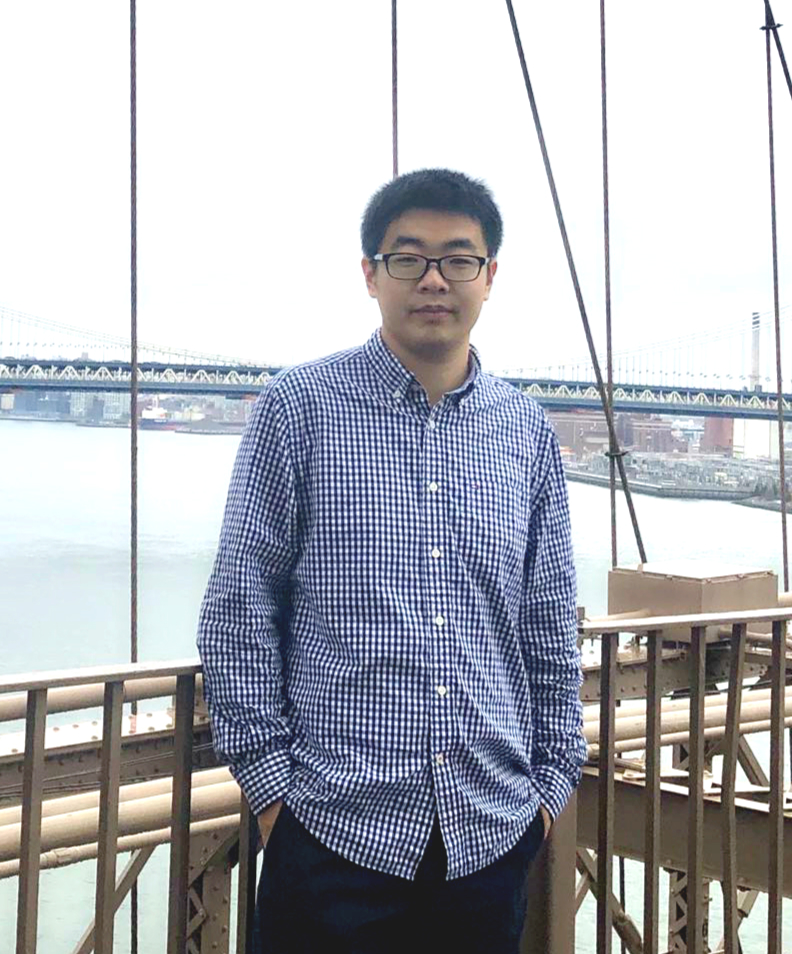

Zhenpeng Xu, Ph.D. (徐振澎)
Zhenpeng's research focuses on advancing next-generation additive manufacturing processes, material designs, and synthesis approaches to create multifunctional materials and integrated devices with precise control over architectures, compositions, and multi-scale features. With expertise in optics, mechanics, material science, and 9+ years of experience in additive manufacturing, Zhenpeng aims to achieve seamless integration of material, structure, and performance, with significant applications in intelligent materials, energy systems, and communications technologies. Zhenpeng has authored 20+ publications, including in prestigious journals such as Science and Nature Electronics. Currently, as a PI/Manager at Atomic Semi , Zhenpeng leads a research group developing additive manufacturing applications for semiconductor packaging.
Links: Linkedin, Google Scholar E-mail: -----.---.---
Education
-
University of California, Los Angeles, CA, USA Sep. 2019 - Mar. 2023
Ph.D., Advisor: Xiaoyu (Rayne) Zheng
-
Virginia Tech, Blacksburg, VA, USA (Transfered to UCLA) Jul. 2018 - Sep. 2019
Ph.D. student, Mechanical Engineering
-
University of Florida, Gainesville, FL, USA Aug. 2016 - Jun. 2018
M.Sc., Mechanical Engineering
Experience/Projects
-
PI/Manager of Packaging Group Aug. 2023 – Present
Atomic Semi, Inc. (www.atomicsemi.com)
-
Postdoctoral researcher Apr. 2023 – Jul. 2023
AMML, UC Berkeley
- 3D printing of emissive architectures with halide perovskites
- High throughput additive manufacturing of composites using a continuous liquid interface production process
- Embedded direct ink writing for 3D fiber alignment
-
Graduate research assistant Jul. 2018 – Apr. 2023
AMML (Virginia Tech, UCLA, and UC Berkeley)
- Large-scale high-resolution scanning projection stereolithography process
- Ultra-lightweight antennas
- Multi-material 3D printing techniques and their applications
- Additive manufacturing of carbon fiber reinforced composites
- Please refer to this [portfolio document] for project details
-
Co-Founded XAYAV Inc.: Commercialization of a desktop LCD 3D printer Apr. 2017 - May. 2018
XAYAV Inc. (www.xayav.com), Gainesville, FL, USA
- Designed and prototyped a desktop LCD 3D printer by milling, lathe, CNC, hand tools, etc.
- Finalized the manufacturing processes of the printer, including metal machining, sheet metal forming, die casting, acrylic molding, PCB manufacturing, silk screen printing, etc.
- Investigated and visited suppliers (Shenzhen, China) for production; managed supply chain
- Successfully sold hundreds of printers in the USA Photos: [Packaging design], [Manufacuture at Shenzhen], [Assemblying], [Model V], [First printer we saled]
-
Project: Development of various 3D printers Sep. 2016 - Mar. 2017
XAYAV Technology Team, Gainesville, FL, USA
- Designed various types of 3D printers (FDM, SLS, DLP, and LCD 3D printers)
- Prototyped 3D printers by milling, lathe, CNC, hand tools, etc Photos: [Cutter], [LCD printer prototype], [3D printed demo1], [3D printed demo2], [3D printed demo3]
![[Packaging design]](project_photos/XAYAV_ModelV/Package.png){kind=link}
![[Manufacuture at Shenzhen]](project_photos/XAYAV_ModelV/Production.jpg){kind=link}
![[Assemblying]](project_photos/XAYAV_ModelV/Assemblying.jpg){kind=link}
![[Model V]](project_photos/XAYAV_ModelV/Model V.jpg){kind=link}
![[First printer we saled]](project_photos/XAYAV_ModelV/Shipping.jpg){kind=link}
![[Cutter]](project_photos/XAYAV/cutter.jpg){kind=link}
![[LCD printer prototype]](project_photos/XAYAV/LCD prototype.jpg){kind=link}
![[3D printed demo1]](project_photos/XAYAV/3D printed demo1.jpg){kind=link}
![[3D printed demo2]](project_photos/XAYAV/3D printed demo2.jpg){kind=link}
![[3D printed demo3]](project_photos/XAYAV/3D printed demo3.jpg){kind=link}
Publications
-
Charge-programmable photopolymers for 3D electronics via additive manufacturing
[pdf][doi]
Zhen Wang, Junbo Wang, Zhenpeng Xu, Ryan Hensleigh, Haotian Lu, Mack Sowers, Marcus A. Worsley, Yahya Rahmat-Samii, Xiaoyu (Rayne) Zheng
In: Advanced Functional Materials, Jan 2024
-
Supramolecular assembly of blue and green halide perovskites with near-unity photoluminescence
[pdf][doi]
Cheng Zhu, Jianbo Jin, Zhen Wang, Zhenpeng Xu, Maria C. Folgueras, Yuxin Jiang, Can B. Uzundal, Han K. D. Le, Feng Wang, Xiaoyu (Rayne) Zheng, Peidong Yang
In: Science, Jan 2024
-
Additive manufacturing of self‐sensing carbon fiber composites
[pdf][doi]
Zhenpeng Xu, Haotian Lu, Qiyi Chen, Seokpum Kim, Vlastimil Kunc, Xiaoyu (Rayne) Zheng
In: Advanced Engineering Materials, Oct 2023
-
One-step method for the fabrication of pure and metal-decorated densified CNT films for effective electromagnetic interference shielding
[pdf][doi]
Fan Yang, Shengcun Ma, Chia Miang Khor, Yiming Su, Zahra Barani, Zhenpeng Xu, Arthur Boyko, Arpita Iddya, Naama Segev-Mark, Xiaoyu Zheng, Fariborz Kargar, Alexander A. Balandin, Guy Ramon, Igor De Rosa, Eric Hoek, David Jassby
In: Carbon, Oct 2023
-
Rapid inverse design of metamaterials based on prescribed mechanical behavior through machine learning
[pdf][doi]
Chan Soo Ha, Desheng Yao, Zhenpeng Xu, Chenang Liu, Han Liu, Daniel Elkins, Matthew Kile, Vikram Deshpande, Zhenyu Kong, Mathieu Bauchy, Xiaoyu Zheng
In: Nature Communications, Sep 2023
-
Materials design for charge-programmed additive manufacturing of antennas
[pdf][doi]
Zhen Wang, Zhenpeng Xu, Junbo Wang, Yahya Rahmat-Samii, Xiaoyu Zheng
In: IEEE International Symposium on Antennas and Propagation and USNC-URSI Radio Science Meeting, Jul 2023
-
An overview of novel antennas manufactured via charge-programmed multi-material 3D printing
[pdf][doi]
Junbo Wang, Zhenpeng Xu, Zhen Wang, Xiaoyu Zheng, Yahya Rahmat-Samii
In: IEEE International Symposium on Antennas and Propagation and USNC-URSI Radio Science Meeting, Jul 2023
-
Development of a low-cost lightweight advanced k-band horn antenna with charge-programmed deposition 3D printing
[pdf][doi]
Junbo Wang, Zhenpeng Xu, Zhen Wang, Xiaoyu Zheng, Yahya Rahmat-Samii
In: IEEE Antennas and Wireless Propagation Letters, Apr 2023
-
On the elastodynamic properties of octet truss-based architected metamaterials
[pdf][doi]
Mourad Oudich, Edward Huang, Hyeonu Heo, Zhenpeng Xu, Huachen Cui, Nikhil JRK Gerard, Xiaoyu Zheng, Yahya Rahmat-Samii
In: Applied Physics Letters, Apr 2023
-
Fully 3D-printed lightweight combination of a circularly polarized transmitarray and a feed horn
[pdf][doi]
Junbo Wang, Ryan Hensleigh, Zhenpeng Xu, Zhen Wang, Xiaoyu Zheng, Yahya Rahmat-Samii
In: IEEE AP-S/URSI 2022, July 2022
-
Design and printing of proprioceptive three-dimensional architected robotic metamaterials
[pdf][doi]
Huachen Cui, Desheng Yao, Ryan Hensleigh, Haotian Lu, Ariel Calderon, Zhenpeng Xu, Sheyda Davaria, Zhen Wang, Patrick Mercier, Pablo Tarazaga, Xiaoyu Zheng
In: Science, June 2022
News: UCLA Samueli Newsroom, Video -
The coupled strength and toughness of interconnected and interpenetrating multi-material gyroids
[pdf][doi]
Padmeya P. Indurkar, Angkur Shaikeea, Zhenpeng Xu, Huachen Cui, Xiaoyu Zheng, Vikram Deshpande
In: MRS Bulletin, Apr 2022
-
Ultra-lightweight transmitarray antenna enabled by charge-programmed three-dimensional multi-Material printing
[pdf][doi]
Junbo Wang, Ryan Hensleigh, Zhenpeng Xu, Anastasios Papathanasopoulos, Xiaoyu Zheng, Yahya Rahmat-Samii
In: NRSM-URSI 2022, Dec 2021
-
Vat photopolymerization of fly-like, complex micro-architectures with dissolvable supports
[pdf][doi]
Zhenpeng Xu, Ryan Hensleigh, Nikhil JRK Gerard, Huachen Cui, Mourad Oudich, Wentao Chen, Yun Jing, Xiaoyu Zheng
In: Additive Manufacturing, Sep 2021
-
Stiff and strong, lightweight bi-material sandwich plate-lattices with enhanced energy absorption
[pdf][doi]
Meng-Ting Hsieh, Chan Soo Ha, Zhenpeng Xu, Seokpum Kim, H. Felix Wu, Vlastimil Kunc, Xiaoyu Zheng
In: Journal of Materials Research, Aug 2021
-
Three-dimensional trampolinelike behavior in an ultralight elastic metamaterial
[pdf][doi]
Nikhil JRK Gerard, Mourad Oudich, Zhenpeng Xu, Desheng Yao, Huachen Cui, Christina J. Naify, Alec Ikei, Charles A. Rohde, Xiaoyu Zheng, Yun Jing
In: Physical Review Applied, Aug 2021
-
Current challenges and potential directions towards precision microscale additive manufacturing – Part II: Laser based curing
[pdf][doi]
Dipankar Behera, Samira Chizari, Lucas A Shaw, Michael Porter, Ryan Hensleigh, Zhenpeng Xu, Nilabh K Roy, Liam G Connolly, Xiaoyu Zheng, Sourabh Saha, Jonathan B Hopkins, Michael A Cullinan
In: Precision Engineering, Mar 2021
-
Current challenges and potential directions towards precision microscale additive manufacturing–Part IV: Future perspectives
[pdf][doi]
Dipankar Behera, Samira Chizari, Lucas A Shaw, Michael Porter, Ryan Hensleigh, Zhenpeng Xu, Ximeng Zheng, Liam G Connolly, Nilabh K Roy, Robert M Panas, Sourabh K Saha, Xiaoyu Zheng, Jonathan B Hopkins, Shih-Chi Chen, Michael A Cullinan
In: Precision Engineering, Mar 2021
-
A general method to synthesize and sinter bulk ceramics in seconds
[pdf][doi]
Chengwei Wang, Weiwei Ping, Qiang Bai, Huachen Cui, Ryan Hensleigh, Ruiliu Wang, Alexandra H Brozena, Zhenpeng Xu, Jiaqi Dai, Yong Pei, Chaolun Zheng, Glenn Pastel, Jinlong Gao, Xizheng Wang, Howard Wang, Ji-Cheng Zhao, Bao Yang, Xiaoyu Zheng, Jian Luo, Yifei Mo, Bruce Dunn, Liangbing Hu
In: Science, May 2020
News: Featured as Front Cover of Science, University of Maryland News, ScholarSet
-
Charge-programmed three-dimensional printing for multi-material electronic devices
[pdf][doi]
Ryan Hensleigh, Huachen Cui, Zhenpeng Xu, Jeffrey Massman, Desheng Yao, John Berrigan, Xiaoyu Zheng
In: Nature Electronics, Apr 2020
News: UCLA Samueli Newsroom -
Additive manufacturing of two-phase lightweight, stiff and high damping carbon fiber reinforced polymer microlattices
[pdf][doi]
Zhenpeng Xu, Chan Soo Ha, Ruthvik Kadam, John Lindahl, Seokpum Kim, H Felix Wu, Vlastimil Kunc, Xiaoyu Zheng
In: Additive Manufacturing, Mar 2020
-
Application of 3D printing technology in mechanical discipline teaching
[pdf][doi]
Chong Peng, Zhenpeng Xu, Xinggang Jiang
In: Experiment Science and Technology, Oct 2017
Academic Services
- [Invited] Guest Editor: Coatings, Special Issue on Advanced Functional Materials and Coatings in Additive Manufacturing: Challenges, Opportunities and Innovations
- Reviewer: Journal of Materials Research; 3D Printing and Additive Manufacturing; Materials Science in Additive Manufacturing; Applied Sciences; Nanomaterials; Progress in Additive Manufacturing; Polymers; Micromachines; Materials; The International Journal of Materials and Engineering Technology; Sustainability; Crystals; Experiment Science and Technology
Teaching Experience
- Teaching Assistant, Additive Manufacturing/3D Printing Fundamentals, UC Berkeley (Spring 2023)
- Teaching Assistant, 3D Printing and Materials Design, University of California, Los Angeles (Winter 2021)
- Teaching Assistant, Rapid Prototyping, Virginia Tech (Spring 2019)
Technical Skills
- Characterization tools: Tensile/Compression Tester, Scanning Electron Microscopy, DMA, Laser Vibrometer
- Machining and design tools: Miller, Lathe, CNC, Mechatronics, Mechanical design, Machining
- CAD software: Autodesk Inventor, SolidWorks, Netfabb, nTopology
- Other software: MATLAB, LabVIEW, Arduino, COMSOL
- Programming languages: C/C++, Python, Java, HTML
Community Services
-
During the beginning of the COVID-19 pandemic (Spring 2020), I worked with my advisor and printed over 500 face shields using FDM printers in our lab. The shields were donated to combine LA and local hospitals. Together, we'll get through this!
Photos: [Face shields], [Thanks note from community]
![[Face shields]](Community services/Face shield.jpg){kind=link}
![[Thanks note from community]](Community services/Thanksnote.jpg){kind=link}